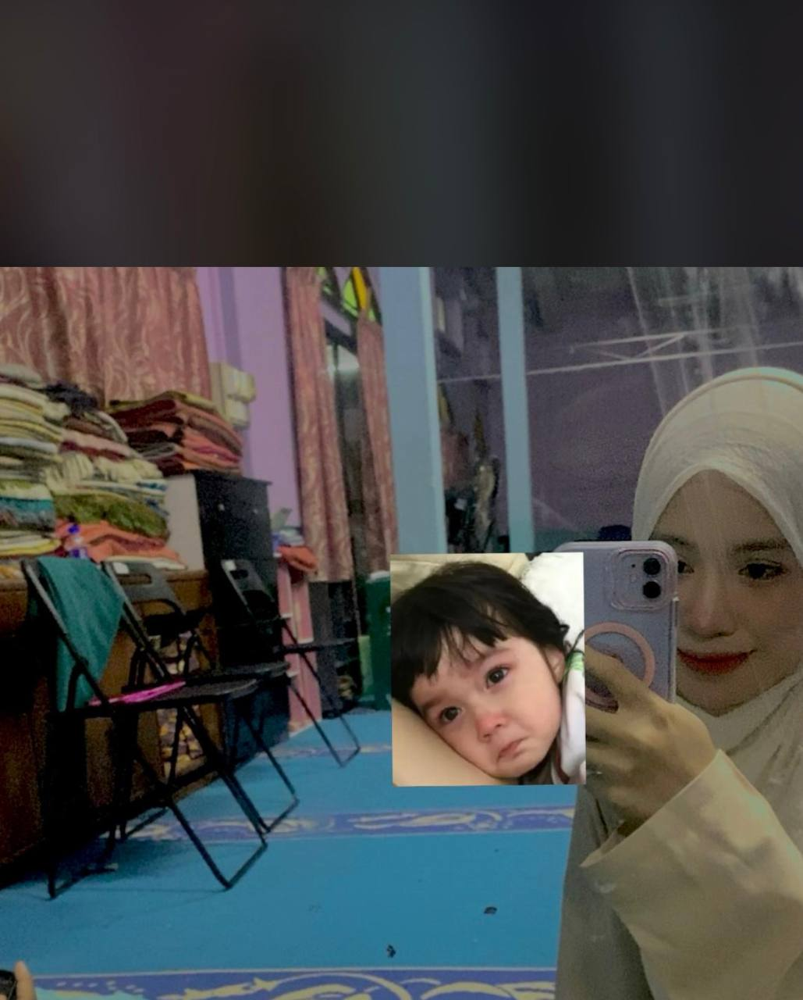
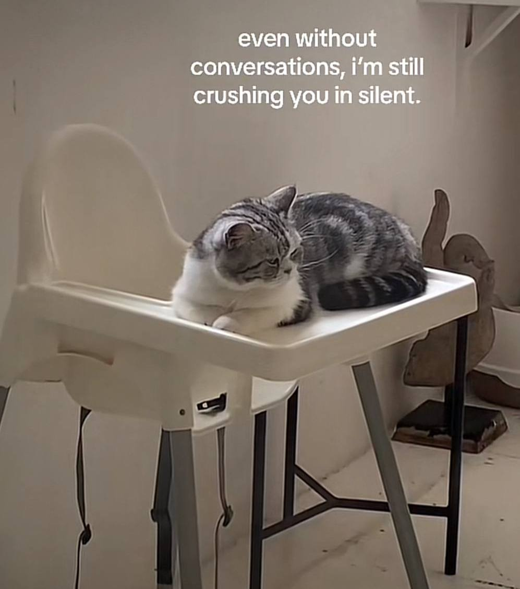

kata kata : habiskan apa yang telah aku mula

Hi maybe this is my last note for you I know that were getting stranger and i hope youre doing well here.its sad but i still hope that we can talk,we can see each other like dulu ii but semua tu Its imposibble untuk jadi kan and aku tak tahu samada ni last text we’re ? Untuk jumpa semula in person mungkin susah but at least we can view each other activity by stat whatsapp only right nk chat pon nk borak apa je an kalau macam dulu adalah benda nk borak🙂↕️and i just want say that im crushing on you since last year since aku nk benti tapi takpelah im always pray the best for you and belajar lah elok ii sampai habis kamu punya apa tu nurse tu an and aku harap kau belajar betul ii macam aku kejar your dream untuk kerja ke apa ke okeyy im always pray the best for you.i hope kau tak lupa aku walaupun takde memories yang cantik but im happy dengan keberadaan kau as kawan an.hope we can meet each other in the future but its quite impposible an yelah kau duduk jauh HHAH😂thank you untuk everthing yang penah kau buat samada kau sedar atau tak sedar but i want you to know that you are more than perfect in eyes and kalau rasa tak selesa bagitau je okeyy i dont to bother you sebabkan nanti aku akan kacau kau punya study ke apa ke an or anything else.i hope this is not the last goodbye from me but aku bersyukur gila ada kawan macam kau walaupun tak betul sangat but im happy to have you in my life eventho kau akan hilang juga nanti an but im always bersyukur to have you sejak tahun lepas hehehe.so takde apa lagi kot see you when i see you bubyeee maaf kalau apa aku cakap ada buat kau terasa hati ke it just my luahan from bottom of my heart and the most important jangan bagitau sesiapa about us apa yang aku cakap simpan untuk diri kau okeyyyy jangan bagitau orang lain promise even kawan kawan kau or staf homewin okeyy.bubyee jumpa lagiiiii✨✨✨😀 ✌️😔🤗
BUBYEE JAGA DIRI OKEYYYYY ASSALAMMUALAIKUM from kawan awak ✨
PS:MAAF CURI GAMBAR SEBAB NK LAWAKAN AKU PUNYA WEBSITE HAHAHHA TAKNAK NAMPAK KOSONG SO PAHNI DELETE
